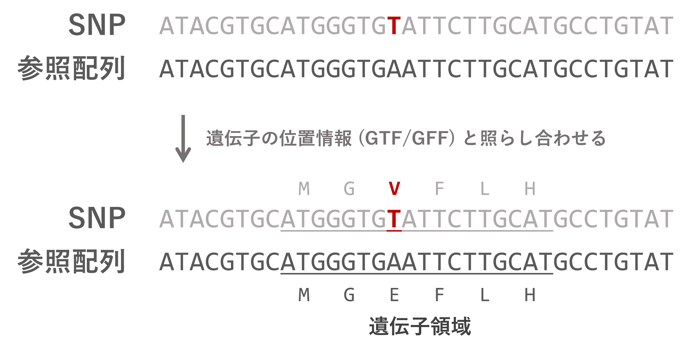

全ゲノム解析ハンズオン 2024 新村グループ
—スモールデータで理解する SNP 解析の流れ
目標
コンテンツ
遺伝子の位置情報 (GTF/GFF) を参照して、 “この SNP は XX 遺伝子上の変異で、しかもアミノ酸を変える” みたいな情報を付加する。

https://pcingola.github.io/SnpEff/download/
SnpEff は Java というプログラミング言語に依存している。 遺伝研の Java はちょっと古いので、 最新版の Java をインストール する:
Java コマンドをどこでも使えるようにする。 (PATH を通す。)
ホームに戻って、.bash_profile (もしくは .bashrc) というファイルがあることを確認する。
どちらかを開いて、以下の行を追加して保存する:
export JAVA_HOME=${HOME}/bin/jdk-23 # ダウンロードしたものに合わせる。jdk23-1 なら ${HOME}/bin/jdk23-1 と書く。
export PATH=${JAVA_HOME}/bin:$PATH
export MALLOC_ARENA_MAX=2編集したファイルを読み込み、Java の動作確認をする:
最新版の SnpEff をダウンロードする:
cd ~/bin
wget https://snpeff.blob.core.windows.net/versions/snpEff_latest_core.zip
unzip snpEff_latest_core.zip
# rm snpEff_latest_core.zip先ほどと同じように SnpEff の PATH を通す。 ホームの .bash_profile か .bashrc を開いて以下の行を追加する:
SnpEff の動作確認をする:
SnpEff は既存の遺伝子情報データベースをダウンロードしたり、 手元の GTF/GFF からデータベースを自作したりして使う。
Escherichia_coli_b_str_rel606 の遺伝子情報をダウンロード:
変異のアノテーション:
長くて見づらいが、INFO フィールドに新たに ANN= に続く形でアノテーション結果が書かれている。
アノテーション結果は | 区切りの16項目からなる。 複数の遺伝子にまたがる場合はさらに , 区切りで続く。
例:
G|missense_variant|MODERATE|pcnB|ECB_00142|transcript|ACT37835|protein_coding|1/1|c.904A>C|p.Asn302His|904/1365|904/1365|302/454||WARNING_TRANSCRIPT_NO_START_CODON
# ALTアリル|変異の種類|変異の影響|遺伝子名|遺伝子ID|タイプ|転写産物名|転写産物biotype|Rank/total|塩基の位置と変異|アミノ酸の位置と変異|cDNA_position/cDNA_length|CDS_position/CDS_length|Protein_position/Protein_length|Distance to feature|エラーや警告pcnB のアミノ酸を変える変異、302番目のアスパラギンがヒスチジンになっている。
SnpEff を実行すると、snpEff_genes.txt というファイルもできる。
このファイルには各転写産物ごとに、どの程度の影響の変異がいくつあるかがタブ区切りで整理されている。
アミノ酸を変える変異をともなう遺伝子を抜き出してみる:
🔰 元論文 Barrick et al. 2009 の Table. 1 と比べてみよう。
生物種/ゲノムのバージョンによってはデータベースがない場合もある:
ニワトリも GRCg7b を使う場合、データベースを自作する必要がある:
達成🎉
参考
達成🎉
できるようになったこと